Chapter 7: some, any, much, many¶
Determiners — noun se pehle ka chhota faisla
Noun bolne se pehle hum aksar ek chhota shabd lagaate hain jo batata hai — kaunsa, kitna, ya kiska. Hindi me "ye, wo, kuch, bahut, har, mera" se kaam chal jaata hai. English me wahi "bahut" kabhi many banta hai, kabhi much, aur "kuch" kabhi some, kabhi a few. Ye faisla ek hi sawaal se hota hai — aur wo sawaal is chapter ki chaabi hai.
Ek line me
A determiner comes before a noun and tells us which one, how many / how much, or whose. Articles (a, an, the) bhi determiners hi hain — unka apna chapter alag hai.
- These mangoes are sweet. Kaunse? — ye wale. (which)
- We don't have much time. Kitna? — zyada nahi. (how much)
- Is this your bag? Kiska? — tumhara. (whose)
7.1 Pehla sawaal hamesha — gin sakte ho ya nahi?¶
Lagbhag har determiner ki galti ek hi jagah se aati hai: humne socha nahi ki noun gina ja sakta hai ya nahi. Ye sawaal pehle poochh lo, to aadhe determiners apne aap sahi lagne lagenge.

Sabse pehla sawaal
Determiner chunne se pehle poochho: noun gina ja sakta hai ya nahi? Countable ho to ek ya kai — a, many, a few, these. Uncountable ho to — much, a little, this. Kuch dono ke saath chalte hain: some, any, all, enough.
Ye shabd English me gine nahi jaate
work, advice, information, furniture, luggage, equipment, news, homework, traffic — inka plural nahi banta aur inke saath a / many nahi lagta.
Ginna ho to tukda jodo: a piece of advice, two pieces of furniture, an item of news. Hindi me "do salaah" bol dete hain, isliye yahan sabse zyada galti hoti hai.
7.2 this, that, these, those — paas ya door¶
Ye chaar shabd ungli ki tarah kaam karte hain — kisi cheez ki taraf ishaara karte hain. Do hi sawaal: cheez paas hai ya door, aur ek hai ya kai.
Paas-door, ek-kai
this (paas, ek) · these (paas, kai) · that (door, ek) · those (door, kai). Determiner aur noun dono ek hi number me hone chahiye: this book, these books.
'These type of' — sabse aam chook
- Galat: These type of questions are easy.
- Sahi: This type of question is easy. / These types of questions are easy.
- Kyun: "these" plural hai, to uske baad wala noun bhi plural chahiye — types. Ya phir dono singular rakho.
7.3 some aur any — haan wale aur na wale vaakya¶
Dono ka matlab lagbhag "kuch" hai, aur dono countable plural aur uncountable — dono ke saath chalte hain. Farq vaakya ke mood ka hai: seedhi baat hai, inkaar hai, ya sawaal.
| Vaakya | Shabd | Example |
|---|---|---|
| Seedhi (positive) baat | some | I bought some apples. |
| Negative | any | I didn't buy any apples. |
| Aam sawaal | any | Do you have any questions? |
| Offer ya request | some | Would you like some tea? |
| "Koi bhi" (positive me) | any | Take any seat you like. |
some vs any
some — positive vaakya, offer aur request me. any — negative aur aam sawaal me, ya "koi bhi" ke matlab me. Chai offer karte waqt "some" — kyunki aap "haan" ki umeed kar rahe ho.
- There isn't any milk in the fridge. Fridge me bilkul doodh nahi hai.
- Can I have some water, please? Request hai, isliye sawaal hote hue bhi "some".
7.4 much, many, a lot of — kitna aur kitne¶
Hindi ka ek "bahut" English me do raaste leta hai. Yahan countable ka sawaal seedha kaam aata hai — many ginti wale noun ke liye, much dher wale ke liye.
| Shabd | Kiske saath | Kahan zyada | Example |
|---|---|---|---|
| many | countable plural | har jagah | How many students came? |
| much | uncountable | negative, sawaal | I don't have much money. |
| a lot of / lots of | dono | positive, bolchaal | She has a lot of friends / patience. |
| fewer | countable | tulna | fewer cars |
| less | uncountable | tulna | less traffic |
much vs many
many + countable plural (many books), much + uncountable (much water). Positive baat me "a lot of" zyada natural lagta hai — dono ke saath chal jaata hai.
'How much' ya 'How many'?
How much is this shirt? — daam (paisa uncountable hai).
How many shirts did you buy? — ginti.
7.5 a few / few, a little / little — "a" ka jaadu¶
Yahan ek chhota sa "a" poora mood badal deta hai. "a" ke saath baat positive hai — thoda hai, aur kaafi hai. Bina "a" ke baat negative hai — bahut kam hai, kami khal rahi hai.
'a' positive, bina 'a' negative
a few (countable) / a little (uncountable) = thoda hai, kaafi hai. few / little = bahut kam hai, kami hai. I have a little money → chai pee sakte hain. I have little money → mushkil hai.
- She has a few good friends in Chennai. Kuch achhe dost hain — wo akeli nahi hai.
- Few people came to the meeting. Gine-chune log hi aaye — umeed se kam.
7.6 each, every, both, either, neither, all¶
Ye shabd group ke baare me baat karte hain — poore group ki, do me se ek ki, ya ek-ek karke sabki. Inki sabse badi pehchaan: inke baad noun singular aata hai ya plural, ye pakka hai.
Group wale determiners
each, every, either, neither + singular noun + singular verb (Every student has a book). both = do, plural. all = teen ya zyada, ya poora dher (all the milk).
| Shabd | Kab | Example |
|---|---|---|
| each | do ya zyada, ek-ek par dhyan | Each player gets a shirt. |
| every | teen ya zyada, poora group | I walk every day. |
| both | do ke do | Both my parents work. |
| either | do me se koi ek | You can sit on either side. |
| neither | do me se koi nahi | Neither answer is correct. |
| all | teen+ ya uncountable | All the shops were closed. |
'of' lagaoge to 'the / my / these' bhi lagao
each student ✓ each of the students ✓ each of students ✗
both my hands ✓ both of my hands ✓ neither of them** ✓
7.7 enough, aur my / your / their¶
Do chhote par roz ke kaam ke determiners. enough batata hai "jitna chahiye utna", aur possessive determiners batate hain "kiska".
enough — noun se pehle, adjective ke baad
enough* money · enough chairs — noun se pehle.
old enough · fast *enough — adjective ya adverb ke baad. ✗ He is enough old. ✓ He is old enough to vote.
| Pronoun | Possessive determiner | Example |
|---|---|---|
| I | my | my phone |
| you | your | your idea |
| he / she | his / her | his car, her office |
| it | its | The dog wagged its tail. |
| we / they | our / their | our house, their children |
Do baatein jo pakad leti hain
1. Ek noun ke saath ek hi determiner: the my book ✗ → my book ✓.
2. its = uska (possessive), it's = it is. The company changed its name. "his / her" maalik ke gender se tay hota hai, cheez se nahi: Priya's brother = her brother.
7.8 Wo galtiyan jo hum sach me karte hain¶
Determiner ki sabse aam Indian-English galtiyan
- Galat: I have many works today.
- Sahi: I have a lot of work today.
-
Kyun: "work" (kaam) uncountable hai — iska plural nahi banta aur "many" nahi lagta. "works" ka matlab kalaakriti hota hai: the works of Premchand.
-
Galat: Each students must bring an ID card.
- Sahi: Each student must bring an ID card.
-
Kyun: each aur every ke baad noun hamesha singular. Plural chahiye to "each of the students" ya "all students" bolo.
-
Galat: Can you give me some informations?
- Sahi: Can you give me some information?
-
Kyun: information, advice, furniture, luggage — sab uncountable. Inme -s kabhi nahi lagta.
-
Galat: There are less buses on Sunday.
- Sahi: There are fewer buses on Sunday.
-
Kyun: Buses gin sakte ho, to "fewer". "less" uncountable ke liye: less traffic, less noise.
-
Galat: I don't have some money.
- Sahi: I don't have any money.
- Kyun: Negative vaakya me "any". "some" positive baat aur offer ke liye hai.
7.9 Practice — Determiners¶
Exercise 1
How ___ sugar do you take in your tea?
- much
- many
- few
- a few
Hint: Sugar gin sakte ho?
Jawaab
much
Sugar uncountable hai — hum 'do sugar' nahi bolte. Uncountable ke saath 'much', aur 'How much' se maatra poochhte hain.
Exercise 2
Don't worry, we still have ___ time before the train leaves.
- a little
- little
- a few
- few
Hint: Baat positive hai — thoda samay hai, kaafi hai.
Jawaab
a little
Time uncountable hai, isliye 'little' wala pair. Aur 'don't worry' bata raha hai ki baat positive hai — to 'a' ke saath: a little.
Exercise 3
Look at ___ birds on that far tree!
- those
- these
- this
- that
Hint: Door hain aur kai hain.
Jawaab
those
'that far tree' — cheezein door hain, aur 'birds' plural hai. Door + kai = those.
Exercise 4
I asked two shopkeepers, but ___ of them had the charger.
- neither
- either
- both
- none
Hint: Do me se koi nahi.
Jawaab
neither
Do log the aur dono ke paas charger nahi tha — 'do me se koi nahi' = neither. 'none' teen ya zyada ke liye zyada aata hai.
Exercise 5
Is there ___ milk left in the fridge?
Hint: Aam sawaal hai.
Jawaab
any
Aam sawaal aur negative me 'any' lagta hai. 'some' tab aata jab hum kuch offer ya request kar rahe hote.
Exercise 6
Every child ___ a gift at the party. (get — present simple)
Hint: 'every' ke baad singular.
Jawaab
gets
'every child' singular hai, isliye verb bhi singular — gets. Hindi me 'har bachche ko' sunke plural lagta hai, par English me 'every' akela ek ko ginta hai.
Exercise 7
Is vaakya me galat shabd par tap karo.
Sir, I have many works to finish today.
Jawaab
Galat shabd: works.
Sahi roop: Sir, I have a lot of work to finish today.
'work' (kaam) uncountable hai — 'works' nahi banta, aur 'many' bhi nahi lagta. 'a lot of work' ya 'much work' bolo.
Exercise 8
Galat shabd dhoondo.
Each students has a locker.
Jawaab
Galat shabd: students.
Sahi roop: Each student has a locker.
'each' ke baad noun hamesha singular — student. Verb 'has' pehle se singular hai, wo sahi hai.
Exercise 9
Ek galti hai — dhoondo.
She gave me some useful advices about the interview.
Jawaab
Galat shabd: advices.
Sahi roop: She gave me some useful advice about the interview.
'advice' uncountable hai, iska plural nahi hota. Ek salaah ginni ho to 'a piece of advice'.
Exercise 10
Determiner ko sahi noun se jodo.
| A | B |
|---|---|
| many | minutes |
| much | patience |
| a few | chairs |
| a little | furniture |
Jawaab
many — chairs; much — furniture; a few — minutes; a little — patience
chairs aur minutes gin sakte ho — many, a few. furniture aur patience nahi gin sakte — much, a little.
Exercise 11
Sahi kram me vaakya banao.
Shabd: to / not / is / old / enough / He / drive
Jawaab
He is not old enough to drive
'enough' adjective ke baad aata hai — old enough. 'enough old' galat hai.
Exercise 12
Ye line bolo — 'information' ke aakhir me -s nahi lagana.
Jawaab
Bolo: Could you give me some information about the course
Bol-bol ke 'informations' ki aadat todni padti hai. Request hai, isliye 'some' — aur 'information' bina -s.
Aage kya karein
Apni ek chhoti list banao: work, advice, information, luggage, furniture, news. Har baar inme se koi shabd bolo to ruk ke socho — "gin sakta hoon?" Ek hafte me ye sawaal aadat ban jaayega.